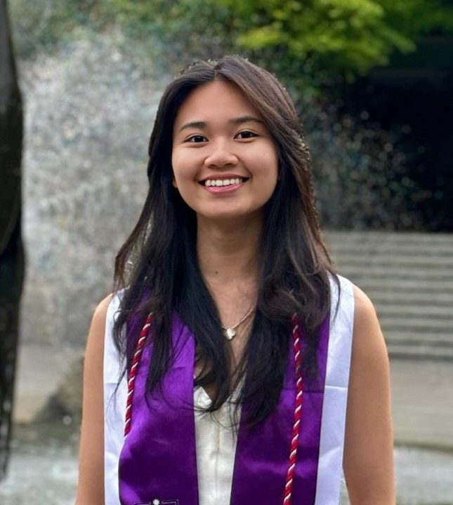
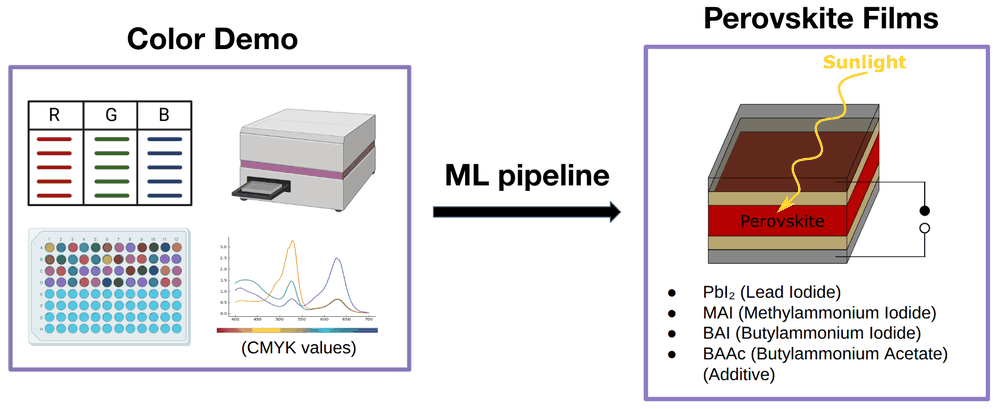
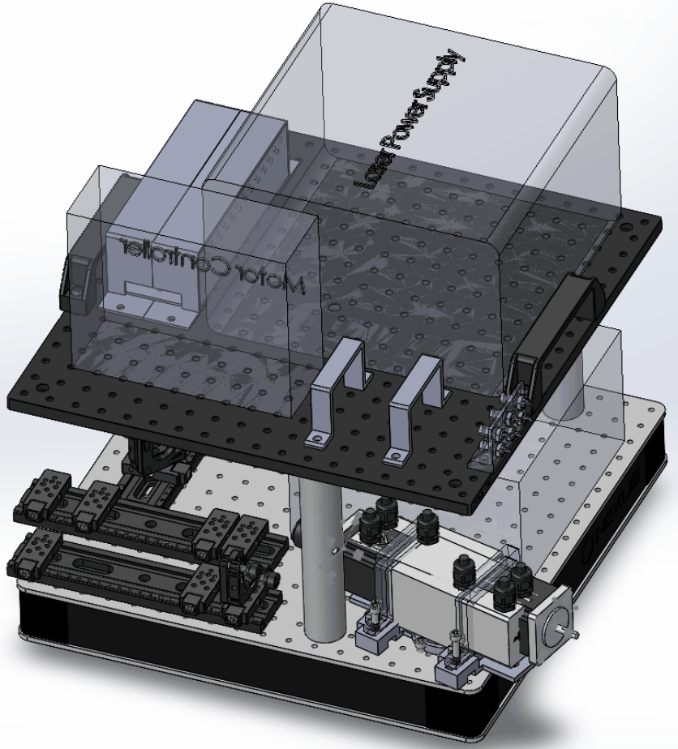
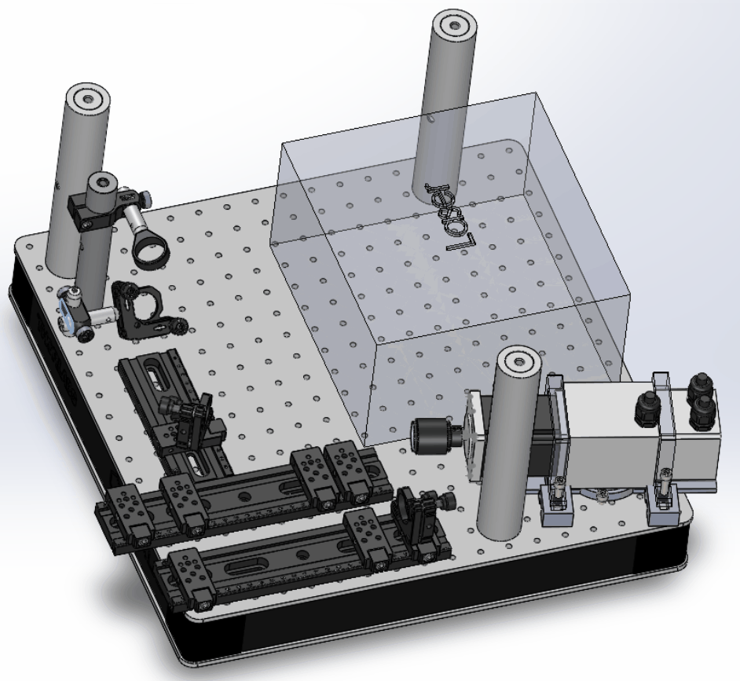
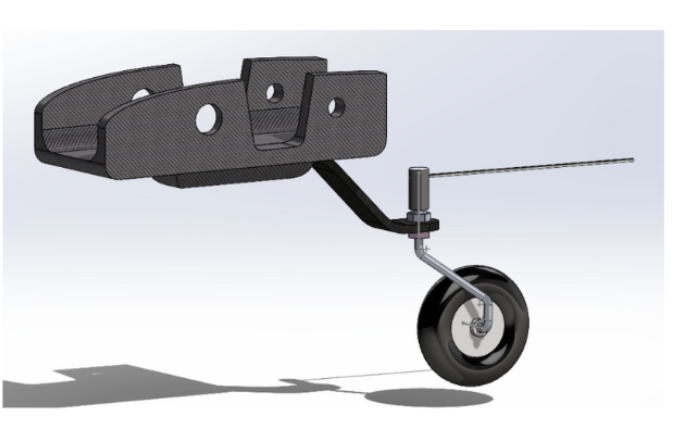

Vattanary Tevy
Summary
- Robotics Reinforcement Learning Researcher at UW WEIRD Lab, working on RL for dexterous robots, carbon fiber layup, and teleoperation data for imitation learning
- Expertise in robotics & RL, machine learning & data science, software (perception, data pipelines, automation), and mechanical design & mechatronics
- Experience in self-driving labs, medical imaging systems, automation, and controls
Focus areas
Robotics & RL
Machine Learning
Data Science
Control Systems
Software & Automation
Mechanical Design
Mechatronics
Computer Vision
Honors & awards
Amazon Robotics Fellowship
Education
M.Eng. Mechanical Engineering — Data Science, Mechatronics · University of Washington · 2024–2026
B.E. Mechanical Engineering — Mechatronics · University of Washington · 2022–2024
Maker Portfolio
Projects across automation, mechatronics, controls, and mechanical design.
- What: Implement and evaluate imitation learning and RL-based control policies for dexterous robotic manipulation (carbon fiber layup tasks) using ROS2 in Linux and Hugging Face’s LeRobot.
- Result: Own data collection pipeline design, model training, evaluation benchmarking, and closed-loop hardware testing.
- How: Collect and process multimodal teleoperation demonstration data (position, force, contact) for policy training; implement rapid experiment cycles to identify failure modes, iterate on model architectures, and characterize sim-to-real transfer performance.
Embodied AI, robotics, and reinforcement learning.
- What: Manual testing bottleneck caused throughput losses and data inconsistencies.
- Result: End-to-end automated PV test system—eliminated manual steps, enabled continuous unattended runs; integrated into PLM/BOM, faster validation.
- How: Independently scoped, designed, and deployed from hardware selection through software commissioning.
High-speed cameras, InGaAs spectrometer, data-acquisition, PyQt GUI.


- What: Manual measurement bottleneck in a self-driving materials lab.
- Result: Real-time computer vision pipeline for closed-loop concentration monitoring; replaced manual spot-checks and accelerated materials discovery.
- How: Collaborated with chemists and engineers to validate performance and drive adoption into active deposition workflows.
LHS (96 samples), CV for first iteration, automation & color concentration pipeline.



- What: Partnered with GE HealthCare to deliver a novel photoacoustic-ultrasound scanner.
- Result: Concept through validated prototype; resolved laser-timing jitter at 1000 Hz, met clinical-grade targets; SPIE publication.
- How: Scoped requirements, designed and 3D-printed custom optical/mechanical subsystems; pulse synchronization mechanism validated through iterative subsystem testing.
Python API/GUI, CAD (power supply, cable clips). PSO trigger: Aerotech motor, 17400 deg/s, laser pulses for photoacoustic + ultrasound.
- What: Directed 5 subteams (45+ members) and $20K budget to deliver a first-of-a-kind tunneling system against a fixed national competition deadline.
- Result: Won Cutterhead Mini-Competition; passed all mechanical, electrical, and software inspections.
- How: Structured workstreams and milestones; diagnosed ME/EE/SW integration failures with root-cause analysis; primary liaison to The Boring Company—translated requirements into design constraints.
Tunneling club controls and site systems.
- What: Scan artifacts in Boeing composite inspection workflows.
- Result: Identified two root causes via FFT-based analysis; novel two-curve probe geometry and fixture redesign (40% better water retention)—improved defect detection and SNR.
- How: FFT-based signal analysis; curved probe for laser line scanner and water column; Boustrophedon path planning (IN/OUT events, DFS).
Curved probe: laser line scanner, water column, robot path planning. Path planning: Boustrophedon decomposition, IN/OUT events, DFS.



- What: Led landing gear design for the team’s RC plane.
- Result: Fully-removable one-piece gear meeting constraints and FOM; fuselage/spar integration and canopy pin locks (pins non–load bearing).
- How: Evaluated and rejected retracts and sliding pins; CAD and FEA; gear housed in fuselage under wing spar with mount and pin locks.
Fully-removable one-piece gear; fuselage/wing spar; canopy pin locks (pins non–load bearing). Options rejected: retracts, sliding pins.
- What: Mechatronics project implementing anti-sway control for a crane/load system.
- Result: Comparison of tracking vs idle vs anti-sway mode; validated via torsion test, beam bending, and motor speed characterization.
- How: System block diagram (sensors, controller, actuators); manufacturing; BOM and Gantt for project management.
Tracking vs anti-sway mode. Block diagram, manufacturing, torsion test, beam bending, motor speed. BOM & Gantt.